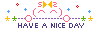

Bem-vindo(a)! ✧
Olá! Meu nome é Amanda, e este é o meu pequeno projeto pessoal. Você pode ler um pouco mais sobre mim e esse site aqui. Muito obrigada por visitar meu projeto. Seja bem-vindo(a) e aproveite sua estadia! ദ്ദി(˵ •̀ ᴗ - ˵ ). Além disso, por favor, assine o meu livro de visitas abaixo! ✧
Updates
22-05-25: Adicionei um contador de visitantes, um click de aplausos, uma seção de créditos algumas coisinhas no "Sobre".
20-05-25: Mudança no layout.
16-05-25: Coloquei um espaço para uma frase na home, o texto "sobre o site" e adicionei o link de made by a girl.
08-05-25: Criei o site :D
Créditos
- Fontes: Mali, Nunito
- Scrollbar code generator: Sourceforge.net
- Contador de visitas: FC2
- Chatbox: Cbox
- Música:
Visitantes
 Online
Online

